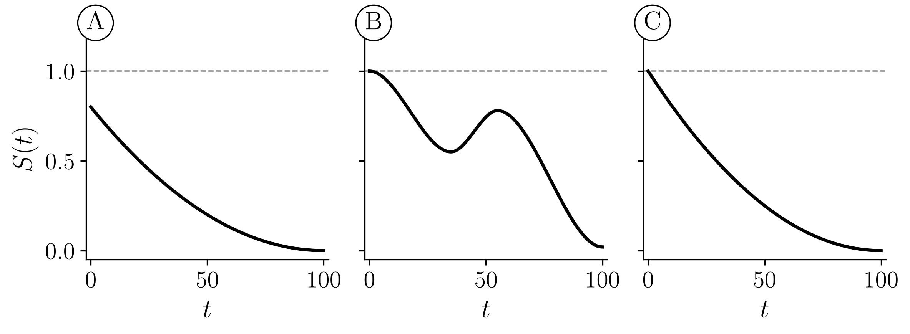
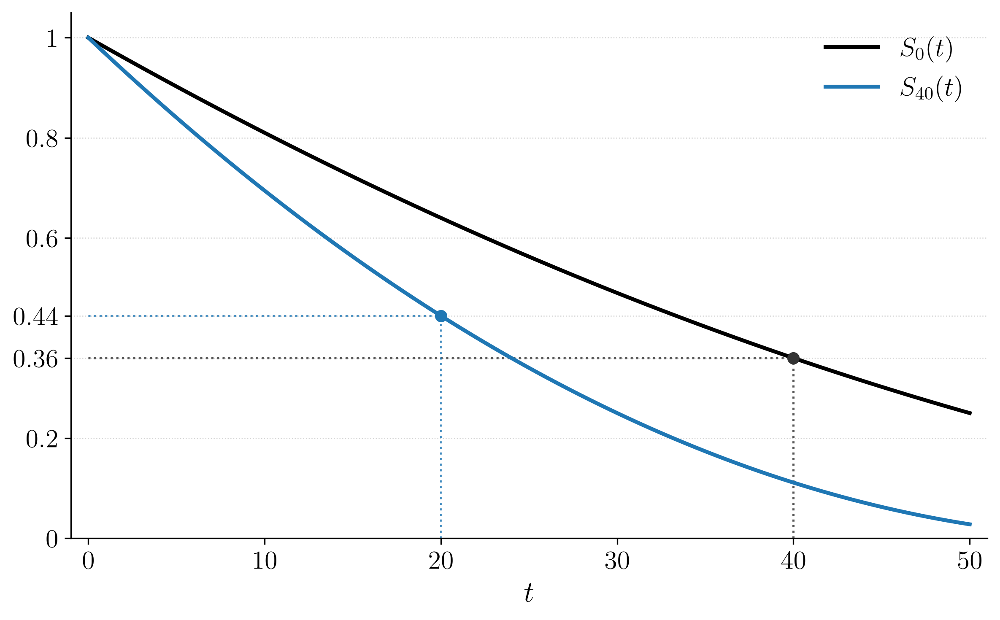

02wk-2: 퀴즈1
# 문제1 아래의 수식에서 조건 \(T_0 > x\) 를 빼고 \(\Pr[T_0 \le x + t]\) 로만 쓰면 무엇이 달라지는가?
\[ \Pr[T_x \le t] = \Pr[T_0 \le x + t \mid T_0 > x] \]
- 아무것도 달라지지 않는다
- \(x\) 살이 되기 전에 죽은 사람까지 함께 세게 된다
- \(x\) 살이 되기 전에 죽은 사람이 빠진다
# 문제2 조건부확률의 정의는 \(\Pr[A \mid B] = \dfrac{\Pr[A \cap B]}{\Pr[B]}\) 이다. 이것을 써서 \(\Pr[T_0 > x + t \mid T_0 > x]\) 를 \(S_0\) 으로 나타내라 (단 \(S_0(x) > 0\))
# 문제3 갓 태어난 사람이 아니라 30세인 사람의 생존함수가 아래와 같다.
\[ S_{30}(t) = \begin{cases} 1 - t/70 & 0 \le t < 70 \\ 0 & t \ge 70 \end{cases} \]
(a) 30세인 사람이 50세를 넘겨 살 확률
(b) 20세인 사람이 50세를 넘겨 살 확률
(c) 30세인 사람이 70세 전에 죽을 확률
# 문제4 \(S_0\) 을 모든 \(t\) 에서 안다고 하자.
(a) 갓 태어난 사람이 70세를 넘겨 살 확률을 \(S_0(t)\)로 표현하라.
(풀이) \(S_0(70)\)
(b) 25세인 사람이 앞으로 15년을 넘겨 살 확률을 \(S_0(t)\)로 표현하라.
(c) 25세인 사람이 40세 전에 죽을 확률을 \(S_0(t)\)로 표현하라.
(d) 25세인 사람이 40세와 70세 사이에 죽을 확률을 \(S_0(t)\)로 표현하라.
(e) 40세인 사람이 70세를 넘겨 살 확률을 구하고, 그것을 (b) 의 답과 곱하면 무엇이 되는지 써라.
# 문제5 갓 태어난 사람의 생존함수 \(S_0\) 이 아래 표와 같다.
| \(t\) | 25 | 50 | 75 |
|---|---|---|---|
| \(S_0(t)\) | 0.80 | 0.50 | 0.20 |
다음에 답하여라.
(a) 갓 태어난 사람이 50세를 넘겨 살 확률을 구하라.
(b) 25세인 사람이 50세를 넘겨 살 확률을 구하라.
(c) (a)와 (b)의 결과를 비교하면, 갓 태어난 사람이 50세를 넘겨 살 확률보다 25세인 사람이 50세를 넘겨 살 확률이 더 크게 나옴을 알 수 있다. 왜 그러한 결과가 나오는지 해석하라.
# 문제6 생존함수 \(S_0\) 이 아래와 같다.
\[ S_0(t) = \begin{cases} 1 - t/100 & 0 \le t < 100 \\ 0 & t \ge 100 \end{cases} \]
(a) 60세인 사람이 80세를 넘겨살 확률을 구하라.
(b) 40세인 사람이 60세를 넘겨 살 확률을 구하라.
(c) (a)와 (b)의 값 중 무엇이 더 큰가? 왜 그렇다고 생각하는가?
# 문제7 분포함수 \(F_0\) 이 아래와 같다.
\[ F_0(t) = \begin{cases} 1 - (1 - t/100)^2 & 0 \le t < 100 \\ 1 & t \ge 100 \end{cases} \] (계산기를 사용하세요)
(a) 20세인 사람이 50세를 넘겨 살 확률
(b) 50세인 사람이 75세 전에 죽을 확률
(c) 20세인 사람이 50세와 75세 사이에 죽을 확률
# 문제8
아래를 안다고 가정할떄, \[ S_x(t) = \frac{S_0(x + t)}{S_0(x)} \quad (S_0(x) > 0) \]
다음을 보여라.
\[ F_x(t) = \frac{F_0(x + t) - F_0(x)}{1 - F_0(x)} \]
# 문제9 어떤 학생이 이렇게 주장했다.
「\(x\) 살인 사람이 \(t + u\) 년을 넘기려면 \(t\) 년을 넘기고 또 \(u\) 년을 넘겨야 한다. 두 일이 서로 독립이므로 \[S_x(t + u) = S_x(t)\, S_x(u)\] 이다.」
(a) 아래의 생존함수에 \(x = 0\), \(t = u = 25\) 을 대입하고 위 주장이 틀렸음을 보여라.
\[ S_0(t) = \begin{cases} 1 - t/100 & 0 \le t < 100 \\ 0 & t \ge 100 \end{cases} \]
(b) 학생의 논증에서 어느 낱말이 잘못이었는지 한 줄로 써라.
# 문제10 다음 주장을 고려하자.
「갓 태어난 사람이 앞으로 \(t\) 년을 넘길 확률은, 이미 \(x\) 살까지 산 사람이 앞으로 \(t\) 년을 넘길 확률보다 언제나 크거나 같다. 즉 모든 모형에서 \(S_0(t) \ge S_x(t)\) 다.」
이 주장은 아래의 생존분석표에서 참일까?
| \(a\) | 1 | 5 | 6 |
|---|---|---|---|
| \(S_0(a)\) | 0.900 | 0.880 | 0.879 |
(a) \(S_0(1)\) 과 \(S_5(1)\) 을 구하여라.
(b) (a) 의 두 값을 견주어 위 주장을 판정하여라.
# 문제11 아래 세 곡선 A, B, C 는 각각 어떤 함수의 그래프다(가로축은 \(t\)). 이 중 생존함수가 될 수 있는 가능성을 가진 그림을 고르고 이유를 설명하라.

# 문제12 아래 그림은 같은 \(S_0\) 에서 나온 검정 \(S_0(t)\) 와 파랑 \(S_{40}(t)\) 를 함께 그린 것이다.

\(S_0(60)\) 을 구하라.